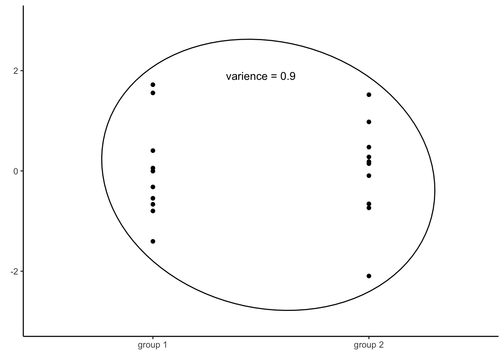
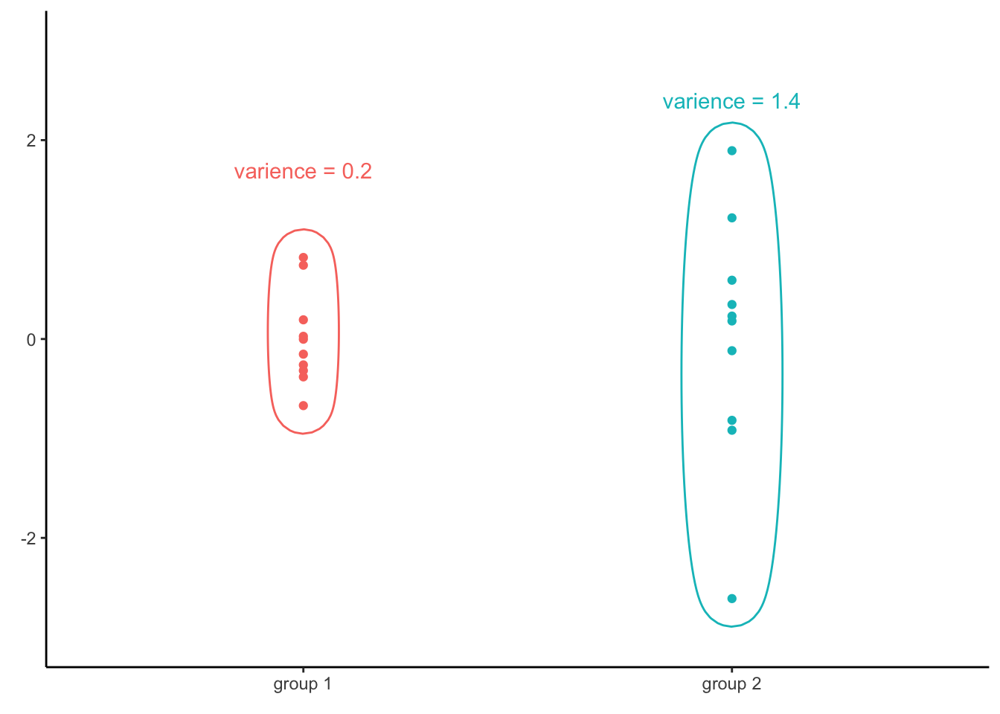

Heteroskedasticity
In this section, we will describe one of the approaches to dealing with non-constant residual variance, namely using so called robust standard errors. We will demonstrate this on the United Nations data set building a model predicting infant mortality per 1000 of live births (infantMortality) by total fertility rate in a country (tfr). The data can be downloaded in the Materials section on this website.
First, we compute the model.
mod1 = lm(infantMortality ~ tfr, data = un)We can check the assumption of homoscedasticity, i.e. the assumption that residuals have equal variance for all values of the independent variable, using a diagnostic residual plot:
plot(mod1, which = 1)
From the plot above, we can see that the assumption of homoscedasticity has been violated, as the variance of residuals increases together with the predicted values of the dependent variables. (This is sometimes graphically described as funnel shape or simply as presence of heteroskedasticity.)
Heteroskedasticity has two consequences:
The estimates of regression coefficients will be less efficient, i.e. we will require more observations to reach the same level of precision compared to a model which fulfills the homoscedasticity assumption. Our regression estimates will be correct on average (they will be unbiased), but each of them will be more likely further from the true value than if the estimates were efficient. Imagine you play darts. Being inefficient but unbiased means that you will not be systematically below, above, to the left or to the rigth of the bull’s-eye. But your average distance from the bull’s-eye will be greater than if you also were efficient. With large samples, this problem does not have to be to serious - you can still have good precision with heteroskedasticity when you have a lot of data.
The standard errors will be biased, leading to systematically under/overestimated confidence of our results. This is a more concerning problem if our goal is inference. Using the standard approach to statistical hypothesis testing, we typically make conclusions on given level of confidence, say 95%. This means that if we conducted our survey 1000 times, we would expect our 95% confidence interval to overlap the true value in population 950 times. Only in 5% of the cases, we expect to have a false positive (a statistically significant finding where there is none). However, with biased standard errors, this will not be the case. Typically, when the assumption of homoskedasticity is violated, we will become overconfident (i.e., the estimated standard errors will be too narrow which will result in the rate of false positives rising above 5% without us being aware of it.).
Classical Standard errors
To see why heteroskedasticity may be a problem, let’s see how classical standard errors for regression coefficients are computed. Formally, the classic standard error of a regression coefficient is:
\[ SE_\beta = \frac{\sigma^2 \sum(x_i - \bar{x})^2}{[\sum(x_i - \bar{x})^2]^2} = \frac{\sigma^2}{\sum(x_i - \bar{x})^2} \]
Where \(\sigma^2\) is the variance of residuals, also known as the mean squared error (under the assumption that our estimate is unbiased), and \(\sum(x_i-\bar{x})^2\) is total sum of squares, i.e. the sum of squared differences between the observed values of the independent variable and their mean. The important thing to notice is that the variance of residuals (\(\sigma^2\)) is a constant, a single value applied for all values of the independent variable.
The reason why we compute the variance of all residuals regardless of the values of the independent variable is because of the fact that if several groups of data have the same variance, than all the data together will have also the same variance. For example, consider the following two groups of numbers plotted below:

The variance of of the first vector is 0.9. The second vector has the same variance of 0.9. If we were to combine the two groups together and then compute the variance of all, we would find that all the values together have the same variance as both groups separately, that is 0.9.

This provides an immensely useful computational shortcut, which allowed for computation of linear regression models long before computers became prevalent. By computing the variance of all residuals together, we will know variance of residuals for every value of the independent variable. However, as mentioned, this is only true if the variance of residuals across all values of the independent variable is equal, i.e. if the assumption of homoscedasticity is met.
Robust standard errors
What if the variance of residuals differ, based on the value of the independent variable?
Consider a different set of two vectors of numbers:

The variance of the first vector is 0.2, while the variance of the second one is 1.4. Since those two vectors have different variances, it is no surprise that the variance of all the values together is not equal to any of the two groups (in this case, it is 0.8). Consequently, if the assumption of homoscedasticity is violated, we cannot infer variance of residuals for any level of the independent variable by simply computing the variance of all residuals.

What should we to then?
The answer is pretty straightforward. If knowing the total variance is not enough, we will have to compute the variance of residuals for all values of the independent variable, one by one. The formula for the standard error of a regression coefficient becomes (Wooldridge, 2015, p. 245) :
\[ SE_\beta = \frac{\sum(x_i - \bar{x})^2*\sigma_i^2}{[\sum(x_i - \bar{x})^2]^2} \]
Notice that the only thing that changed from the previous formula is that we no longer compute the sum of squares (\(\sum(x_i - \bar{x})^2\)) and then multiple it by the variance of residuals. Instead, we compute the variance of residuals for every level of the independent variable separately (\(\sigma_i^2\)).
This way of computing standard errors is known as robust standard errors, also known as heteroscedastic standard errors or sandwich errors. Note that if the variance of residuals is actually the same for all levels of independent variable, i.e. if the residuals are actually homoscedastic, both formulas give the same result.
Correction for finite sample size
The robust standard errors presented above work well as the sample size approaches infinity, but is biased for small samples. To account for this, numerous corrections have been proposed, usually denoted by letters HC (Hayes & Cai, 2007).
The basic robust standard errors we already saw is called HC0. There are three other popular versions: HC1 (which corrects using the degrees of freedom of the model), HC2 (which is based on accounting for leverage) and HC3 (which is similar to HC2, but puts bigger focus on observations with very high leverage).
The exact nature of these corrections are beyond the scope of this course, but interested readers may refer to Hayes & Cai (2007). Also note that these are not the only corrections that exist, but they are the most prevalent.
While the individual correction can perform slightly better or worse depending on the exact situation, generally speaking, the differences between them tend to be small. The table below shows estimated standard error of regression coefficient for total fertility rate from the model we saw above, i.e. infantMortality ~ tfr:
| Type of standard error | Estimated standard error |
|---|---|
| classical | 0.957 |
| HC0 | 1.283 |
| HC1 | 1.290 |
| HC2 | 1.299 |
| HC3 | 1.315 |
As we can see, the biggest differences is between the classical standard error (i.e. the one assuming homoscedasticity) and all variants of the robust standard error. While there are some small differences depending on the correction used, for all types of robust standard error it is clear that the robust standard error is about 33% larger than the classical one.
Robust Standard errors in R
Many packages offer options for computing robust standard errors. Perhaps the most straightforward to use is the estimatr package. To fit a regression model without assuming homoscedasticity, we can use the lm_robust() function:
mod1 = lm_robust(infantMortality ~ tfr, se_type = "HC2", data = un)We can specify the type of robust standard error we want using the se_type argument. By default, lm_robust() computes HC2 standard errors, but also offers option for HC0, HC1, HC3 and classical (i.e. the nonrobust one). The output of the function behaves in a similar way as objects created by lm(), e.g. we can use summary() to see the results.
While the output of the lm_robust() function cannot be easily passed into ggpredict(), we can compute the simple model using lm() and then compute robust standard error during plotting, to visualize the model using marginal effects plot:
mod2 = lm(infantMortality ~ tfr, data = un)
plot(ggpredict(mod2, vcov.fun = "vcovHC", vcov.type = "HC2", terms = "tfr"))
Note that we need to specify both the function used to compute the robust standard errors (vcov.fun = "vcovHC") and the type of error to be computed (vcov.type = "HC2"). Otherwise, classical standard errors will be computed.
Why not always use robust standard errors?
If robust standard errors are valid even under heteroscedasticity, why not use them all the time?
There are at least three reasons:
First reason, robust standard errors are only proven to work with large samples Wooldridge (2015, p. 247).
There are two problems related to this:
- Firstly, even with a HC correction, robust standard errors may be biased when the sample size is small, especially if the variance of residuals is actually constant.
- Secondly, even if the standard error estimate is unbiased, the test statistic for classical tests of regression coefficients won’t have the appropriate (Student’s) distribution in small samples.
Consequently, normal tests are not valid for regression models with robust standard errors and small sample size.
Second reason, robust standard errors are less efficient than the classical ones (Hinkley & Wang, 1991). This means that larger samples are needed to reach the same level of precision, compared to the classical standard errors.
Consequently, when homoscedasticity can be assumed, classical standard errors are preferred.
Third reason, heteroscedasticity can be a sign of model misspecification (King & Roberts, 2015). In other words, heteroscedastic residuals can be a sign that an important variable is missing in the model or that an incorrect type of relationship is assumed between variables (e.g. an incorrect assumption of linearity).
Robust standard errors should therefore not be applied blindly, but only after considering other improvements of our model.